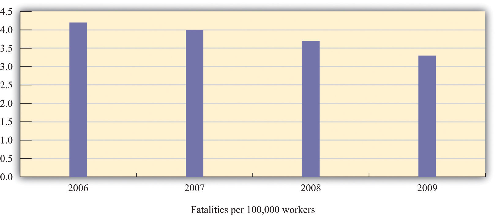
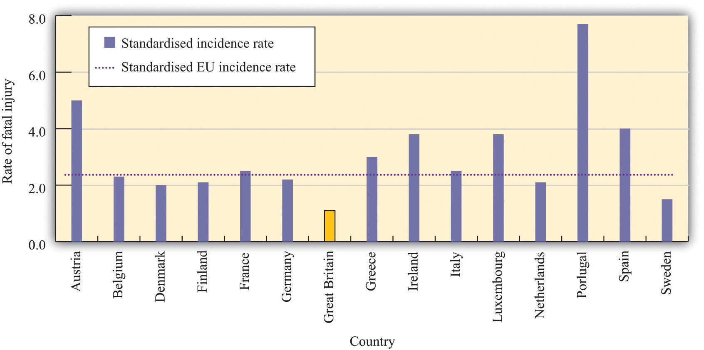

Insurance allows us to remove some risks from our lives, either partially or completely. There are other risks that we accept or even embrace. In some cases, we are willing to take on risks because we are compensated in some way for them. We discuss two examples here: job choice and investment in the stock market. In other cases, we actively seek risk, such as when we gamble, buy lottery tickets, or engage in extreme sports.
We have already discussed how your choice of career should be based on discounted present value, taking into account the fact that it can be costly to move from one job to another. Your choice of career also reflects how you feel about risk and uncertainty. There are numerous kinds of jobs that differ in many dimensions. When choosing a job, we pay particular attention to wages or salaries, vacation plans, health coverage, and other benefits. We also take into account the job’s riskiness.
The most severe risk is, of course, the risk of death. Every year in the United States several thousand workers suffer fatal work injuries. For most of the last decade, this number has been between about 5,000 and 6,000, or the equivalent of roughly 4 deaths for every 100,000 workers. Figure 5.11 "Work Fatalities in the United States" shows data on work-related deaths in the United States for 2006–9.The data come from Occupational Safety and Health Administration, “Census of Fatal Occupational Injuries,” accessed February 24, 2011, http://stats.bls.gov/iif/oshwc/cfoi/cfch0008.pdf. The Occupational Safety and Health Administration (OSHA) is the federal agency that monitors workplace safety. The fatality rate has generally been declining over time. In the early 1990s, the fatality rate was in excess of 5 deaths for every 100,000 workers; in 2009, the fatality rate was 3.3.
Figure 5.11 Work Fatalities in the United States
Source: US Department of Labor, Occupational Safety and Health Administration, http://stats.bls.gov/iif/oshwc/cfoi/cfch0008.pdf.
The fatality rate in the United States is high relative to many other developed countries. For example, the corresponding rate in England in 2006 was 0.8 per 100,000 workers.See Health and Safety Executive, “Fatal Injury Statistics,” accessed March 14, 2011, http://www.hse.gov.uk/statistics/fatals.htm. Care must be taken when comparing international data because they are not always exactly comparable. Most importantly, European Union statistics exclude road traffic accidents, which account for about 43 percent of US deaths. Correcting for this, the US figures are similar to the European Union average. Figure 5.12 "Work Fatalities in Europe" shows the work-related fatalities for countries in the European Union. Most importantly for the current discussion, the fatality rate varies significantly across jobs. In the United States, “Agriculture and mining recorded the highest fatal work injury rates among the major industry sectors in 2005—32.5 fatalities per 100,000 workers for agriculture and 25.6 fatalities per 100,000 workers for mining.” In the European Union, construction, agriculture, and transportation are the most dangerous sectors.See US Department of Labor Bureau of Labor Statistics, “National Census of Fatal Occupational Injuries in 2005,” accessed March 14, 2011, http://www.bls.gov/iif/oshwc/cfoi/cfnr0012.txt and Health and Safety Executive, “European Comparisons,” accessed March 14, 2011, http://www.hse.gov.uk/statistics/european/fatal.htm.
Figure 5.12 Work Fatalities in Europe
In the European Union, the average work-related fatality rate is lower than in the United States, although some countries—most notably Portugal—have higher rates. The lowest rate in the European Union is in Great Britain.
Source: Health and Safety Executive, Great Britain: http://www.hse.gov.uk/statistics/european/fatal.htm.
The risk of death is not the only job risk. Jobs also differ in terms of their risk of injury. In some cases, these injuries can have a severe impact on a person’s quality of life; in other cases, they may prevent an individual from working in the future. Professional athletes and other performers face the risk of injuries that can end their careers. These individuals sometimes buy insurance to help mitigate some of these risks. In 2006, for example, pop star Mariah Carey purchased a $1 billion insurance policy on her legs after signing up for an advertising campaign (“Legs of a Goddess”) with the Gillette shaving company. Bruce Springsteen’s voice is insured for $5.6 million.See starpulse.com, “Mariah Carey Takes Out $1 Billion Insurance Policy For Her Legs,” accessed March 14, 2011, http://www.starpulse.com/news/index.php/2006/05/30/mariah_carey_takes_out_1_billion_insuran for an account of Ms. Carey’s insurance policy; Paul Bannister, “World's Biggest Insurer Takes on All Risks,” accessed March 14, 2011, http://www.bankrate.com/brm/news/insurance/old-lloyds1.asp, details a number of unusual insurance policies.
Riskier jobs generally pay more. A firm that exposes workers to more risk must compensate them for that risk. A compensating wage differentialThe amount in excess of the normal wage paid to compensate a worker for undesirable aspects of a job. is any difference in pay received by identical workers doing different jobs. (By “identical” we mean workers with comparable education, skills, experience, and so on.) Jobs that are unpleasant or dangerous will typically pay higher wages to compensate workers for the negative aspects of their jobs.
To the extent workers do not like to face risks, jobs that are viewed as riskier tend to pay more on average. For example, a recent study found that nurses who were more likely to be exposed to the AIDS virus (HIV) received higher wages than comparable nurses who were less likely to be exposed.Jeff DeSimone and Edward J. Schumacher, “Compensating Wage Differentials and AIDS Risk” (NBER Working Paper No. 10861, November 2004), accessed March 14, 2011, http://www.nber.org/papers/w10861.
Young people’s portfolios of assets are usually very simple: a typical college student might have only a checking account and a savings account. As you grow older, though, you will typically acquire a broader portfolio. Even if you do not directly purchase assets such as stocks and bonds, you may own them indirectly when you sign up for a pension plan. Because the return on stocks (and other assets) is uncertain, owning these assets is another type of risk you choose to take.
Owning a stock is somewhat like buying a lottery ticket. You pay some money to buy a share of the stock of some company. In return, you may be paid some dividends; at some time in the future, you may sell the stock. But at the time you buy the stock, you don’t know the payments you will receive in the future and you don’t know the future price of the stock. So by purchasing a stock, you are gambling. Whether the gamble is favorable or not depends on the price of the stock, the chance it will pay dividends in the future, and the future price. Choosing how to allocate the assets in a portfolio is a type of gamble we all make.
We cannot completely avoid this kind of gamble. Perhaps you think that putting cash in your mattress would be a way to avoid this risk, but that is not the case. Ultimately you care about what that money can buy in terms of goods and services. The real value of the money held in your mattress depends on the future prices of goods and services, which are not known to you today. The benefit of holding cash depends on the unknown inflation rate.
Some people, at some times, are eager and willing to engage in risky activities. People engage in extreme sports, where the danger appears to be part of the attraction. People go to Las Vegas or to Monaco to gamble. In many countries, citizens can purchase a wide variety of lottery tickets sold by their governments. This is a form of gambling: you buy a ticket and if you have the lucky number, then you get a (sometimes large) prize. If you do not have the lucky number, your money is gone.
The existence of lotteries and other kinds of gambling seems like a puzzle. If people are risk-averse, then they are supposed to want to get rid of risk. The purchase of a lottery ticket is the exact opposite: you give up a sure thing (the price of the ticket) for an uncertain outcome. Unlike the purchase of insurance, which is a way to avoid risk, buying a lottery ticket is a demand for a gamble. Why do so many people buy lottery tickets? Why do governments sell them?
Do lottery tickets have an expected value that exceeds the cost of the ticket? If the difference is big enough, then even a risk-averse person might want to buy a ticket. Consider a very simply lottery. Suppose there is one fixed prize, and there is a probability that you win the prize. Then your expected gain is just the probability of winning times the prize:
expected gain = probability of winning × value of prize.Using this equation, you can determine whether the price for a lottery ticket is high or low. If the price of the ticket exceeds the expected gain from buying the ticket, then the ticket is not a good deal. But if the price is low relative to the expected gain, then you may want to accept the risk and buy the ticket.
Let us look at an example. One US lottery is called Powerball. On February 18, 2006, the prize was worth $365 million to the winner. The chance of getting the jackpot was 1 in 988,172,368.This is based on five balls selected ranging from 1 to 55 and a powerball ranging 1 to 42. See the Powerball site (http://www.usamega.com/powerball-howtoplay.htm) for details on this game. See also the odds calculator at CSGNetwork.com, “The Ultimate Lottery Games Odds Calculator,” accessed March 14, 2011, http://www.csgnetwork.com/oddscalc.html. The expected value of a ticket at that time was the value of the prize times the probability of winning: far less than the dollar price of the ticket. Despite the huge prize, the price of a ticket far exceeded its expected value.
Another perspective on the lottery is from the viewpoint of the government selling these tickets. Consider the Texas lottery.Texas Lottery home page, accessed March 14, 2011, http://www.txlottery.org/export/sites/default/index.html. The proceeds from the sale of tickets primarily support education. In 2005, about 60 percent of the income from the lottery went to payment for prizes and 28 percent went to a school fund. From the perspective of the Texas state government, selling lottery tickets is a way to fund programs. If the government is to make money on lottery tickets, then those buying the tickets must, on average, be losing money.
In fact, as this discussion suggests, the expected value of a lottery ticket is less—often substantially less—than the cost of the ticket. Why, then, do people buy lottery tickets? One possibility is that they simply enjoy gambling. This means that, at least with respect to these types of gambles, they are risk-loving rather than risk-averse. The pleasure of a lottery ticket is, among other things, the license to dream. Another possibility is that individuals overestimate their chances of winning.